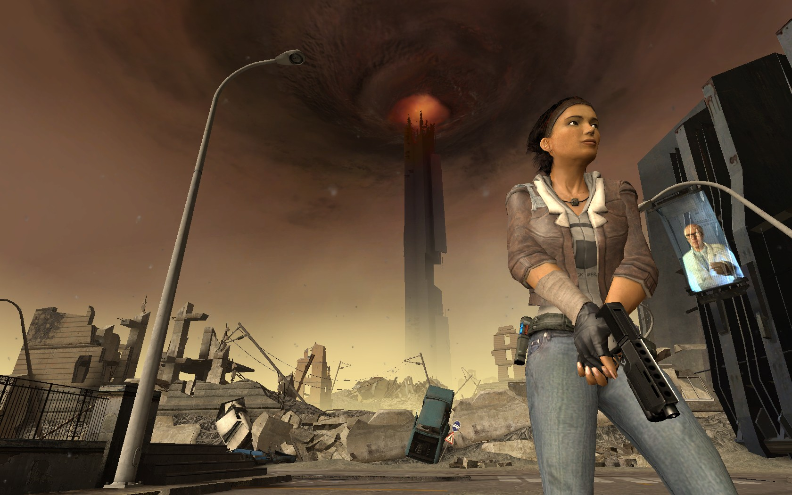

Half-Life 2 – сиквел Half-Life, разработанный компанией Valve, издаваемый ими же и Sierra Entertainment. Игра была выпущена в 2004 году. Разработка длилась шесть лет, на протяжении которых исходный код игры был даже похищен и выложен в Интернете. Основными технологическими достижениями разработчиков можно считать движок Source, предоставивший игрокам потрясающую анимацию персонажей, продвинутый искусственный интеллект противников, реалистичную физику и шейдерный рендеринг. Невиданный ранее уровень взаимодействия игрока с внешним миром был достигнут благодаря использованию модифицированной версии физического движка Havok Physics.
Разработка длилась шесть лет, но по сюжету игры прошло несколько десятилетий после событий Half-Life. И вот, загадочный G-Man пробуждает Гордона Фримена из стазиса, довольно туманно намекнув, что тому предстоят «великие дела»...
Episode One

Продолжение сюжетной линии компьютерной игры Half-Life 2, является самостоятельной игрой, вышедшей в розничную продажу и систему онлайн-загрузки Steam 1 июня 2006 года.
Episode One фокусируется на взаимодействии игрока с персонажем Аликс Вэнс, действие начинается с того же момента, на котором закончилась Half-Life 2.
Episode Two

Следуя идее Valve, что каждый эпизод должен основываться на определённой тематике, Episode Two фокусируется на открытых пространствах, дальних путешествиях и менее линейном геймплее, чем в прошлых играх серии Half-Life. Второй эпизод вышел несколько длиннее первого
Действие игры развивается сразу после событий Episode One в лесной местности близ уничтоженного Сити 17.

Steam — онлайн-сервис цифрового распространения компьютерных игр и программ, разработанный и поддерживаемый компанией Valve. Steam выполняет роль средства технической защиты авторских прав, платформы для многопользовательских игр и потокового вещания, а также социальной сети для игроков. Программный клиент Steam также обеспечивает установку и регулярное обновление игр, облачные сохранения игр, текстовую и голосовую связь между игроками.
Когда создатели работали над этой системой, им пришла идея использовать эту платформу для продажи игр. Steam впервые был представлен на Game Developers Conference 22 марта 2002 года. Версия Steam 1.0 стала доступна во время бета-тестирования Counter-Strike 1.4. Установка Steam была обязательна для бета-тестеров CS 1.4, но являлась лишь дополнительным компонентом для финальной версии.